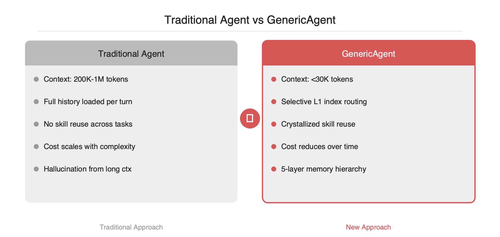

대부분의 에이전트 프레임워크는 200K 이상의 컨텍스트 윈도우를 소비하며 동작합니다. GenericAgent는 약 3,000줄의 시드 코드와 9개 원자 도구만으로 출발해, 작업 수행 과정을 스킬로 결정화(crystallize)하고 5계층 메모리(L0-L4)에 축적합니다. 이후 유사 작업에서는 결정화된 스킬을 직접 호출하므로 컨텍스트 윈도우를 30K 미만으로 유지하면서도 동일 수준의 시스템 제어를 달성합니다. Claude, Gemini 등 주요 LLM을 백엔드로 지원하며, 브라우저·터미널·파일시스템·모바일(ADB)까지 실제 환경에 직접 주입되는 구조를 취합니다.
현재 주류 에이전트 프레임워크는 매 턴마다 전체 대화 이력, 도구 호출 결과, 환경 상태를 컨텍스트에 적재합니다. 작업이 10단계를 넘어가면 컨텍스트는 200K 토큰 이상으로 팽창하고, 이는 두 가지 문제로 이어집니다. 첫째, API 비용이 작업 복잡도에 비례하여 증가합니다. 둘째, 긴 컨텍스트에서 LLM의 주의(attention)가 분산되어 환각 확률이 높아집니다. GenericAgent는 이 구조적 문제를 메모리 계층화와 스킬 결정화로 우회합니다.

GenericAgent의 핵심 설계는 컨텍스트에 올라가는 정보를 계층별로 분리하는 것입니다.
매 턴에서 L0와 L1은 항상 적재되지만, L2-L4는 L1 인덱스를 통해 필요한 항목만 선택적으로 로드됩니다. 이 선택적 적재가 컨텍스트를 30K 미만으로 유지하는 핵심 메커니즘입니다.
에이전트가 처음 접하는 작업은 탐색 모드로 수행됩니다. 브라우저를 열고, 의존성을 설치하고, 스크립트를 작성하고, 디버깅하고, 검증하는 전체 과정을 LLM이 단계별로 수행합니다. 작업이 성공적으로 완료되면 실행 경로가 L3 스킬로 결정화됩니다. 이후 유사한 작업이 들어오면 L1 인덱스에서 매칭되는 스킬을 찾아 직접 호출하므로, 탐색 단계를 건너뛰게 됩니다.
이 구조의 의미는 에이전트 인스턴스가 시간이 지남에 따라 고유한 스킬 트리를 성장시킨다는 것입니다. 동일한 3,000줄 시드 코드에서 출발하더라도, 배포 환경과 수행 작업에 따라 각 인스턴스의 스킬 트리는 상이하게 분화합니다.
GenericAgent는 도구 수를 9개로 최소화합니다. code_run(코드 실행), file_read/file_write/file_patch(파일 I/O), web_scan/web_execute_js(브라우저 제어), ask_user(사용자 확인), update_working_checkpoint(메모리 영속화), start_long_term_update(크로스 세션 경험 축적)로 구성됩니다. 주목할 점은 브라우저 제어가 헤드리스 샌드박스가 아닌 실제 브라우저에 주입되는 방식이라는 것입니다. 사용자의 로그인 세션이 그대로 유지되므로 인증이 필요한 서비스도 별도 OAuth 흐름 없이 조작할 수 있습니다.
GenericAgent의 접근법은 명확한 트레이드오프를 수반합니다. 스킬 트리가 충분히 성장하기 전까지는 모든 작업이 탐색 모드로 수행되어 초기 비용이 높습니다. 또한 공개된 정량 벤치마크가 부재하므로, 도입 전 자체 평가 셋으로 성공률과 토큰 소비량을 측정하는 것이 필수적입니다. 보안 측면에서는 실제 시스템에 직접 접근하는 구조이므로, L0 Meta Rules에 적절한 제약을 설정하지 않으면 의도하지 않은 부수 효과가 발생할 수 있습니다.
그럼에도 불구하고, 컨텍스트 윈도우 효율과 자기 진화 능력의 결합은 장기 운용 에이전트 설계에서 유의미한 방향성을 제시합니다. 반복적이고 환경 의존적인 운영 작업(SRE 자동화, CI/CD 파이프라인 관리 등)에서 스킬 트리 패턴은 높은 실용성을 보일 것으로 판단됩니다.